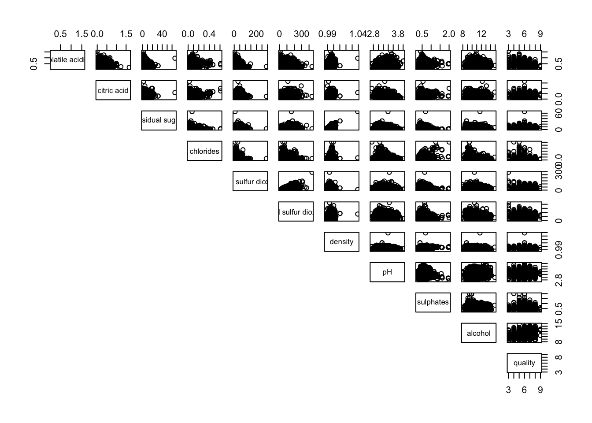
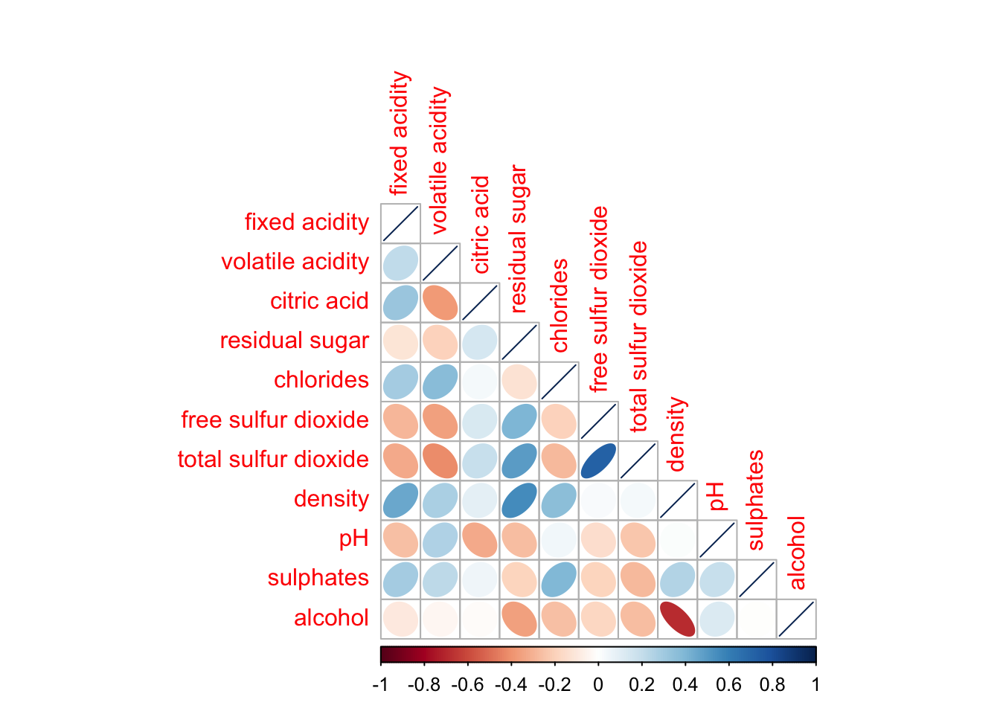
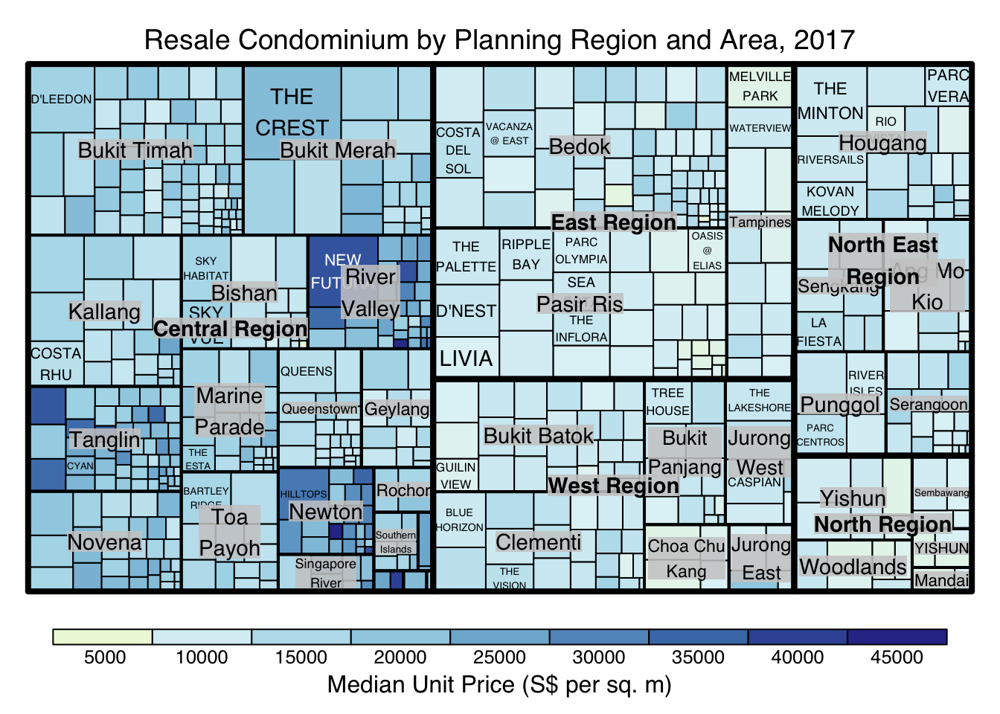
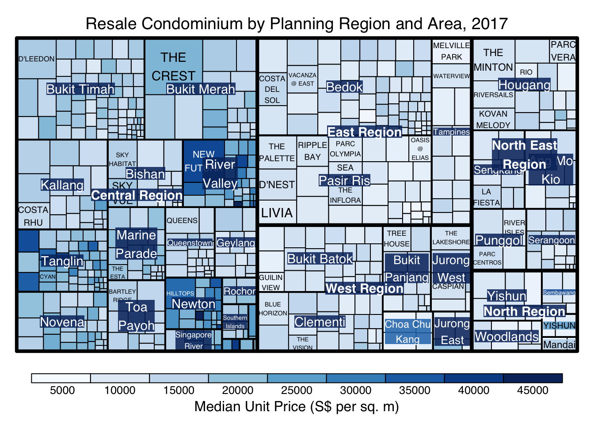
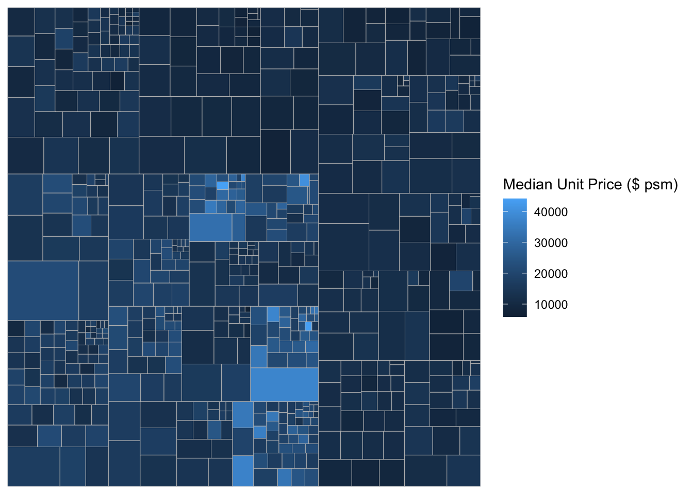

Code
pacman::p_load(corrplot, ggstatsplot, tidyverse)a summary of Correlation Analysis - Qucik access to Correlation
a summary of Treemap Visualisation with R- Qucik access to Treemap
| package | R | ggstatsplot | corrplot |
| func | pairs() |
corrplot() |
|
| common arguement |
|
|
|
| limitation & advantages | scatter plots appear very cluttered when the number of observations is relatively large | comprehensive and professional statistical report | visualization & determine the statistical significance of the correlations |
Correlation coefficient:
2 variables
correlation coefficient ranges between -1.0 and 1.0
1: perfect linear relationship
-1.0: perfect inverse relationship
0.0: no linear relationship
Correlation matrix/Scatterplot matrix:
multivariate data
relation coefficients of the pair
There are 3 broad reasons for computing a correlation matrix.
To reveal the relationship between high-dimensional variables pair-wisely.
To input into other analyses. For example, people commonly use correlation matrices as inputs for exploratory factor analysis, confirmatory factor analysis, structural equation models, and linear regression when excluding missing values pairwise.
As a diagnostic when checking other analyses. For example, with linear regression a high amount of correlations suggests that the linear regression’s estimates will be unreliable.
Corrgram: calculates correlation of variables and displays the results graphically. Included panel functions can display points, shading, ellipses, and correlation values with confidence intervals.
data is large: umber of observations and the number of variables
structure and the patterns of relations among variables
2 main schemes:
Rendering the value of a correlation to depict its sign and magnitude, and
Reordering the variables in a correlation matrix so that “similar” variables are positioned adjacently, facilitating perception.
Methods:
using pairs() of R Graphics
ggcormat() of ggstatsplot package
corrplot package: display correlation matrix or general matrix & allows reordering. good at details, including choosing color, text labels, color labels, layout, etc.
corrplot, ggstatsplot, plotly and tidyverse are used
pacman::p_load(corrplot, ggstatsplot, tidyverse)Wine Quality Data Set of UCI Machine Learning Repository consists of 13 variables and 6497 observations. (red wine and white wine data have been combined into one data file called wine_quality and is in csv file format)
import the data into R by using read_csv() of readr package.
wine <- read_csv("data/wine_quality.csv")Beside type, the rest of the variables are numerical and continuous data type
pairs() of R can create a scatterplot matrix. Some arguments can be changed are:
data[rows,col], empty: select all, [start, end]
na.action = na.omit (By default, missing values are passed and will often be ignored within a panel)
horInd and verIndselect or re-order variables: with different ranges of consecutive values they can be used to plot rectangular windows of a full pairs plot; in the latter case ‘diagonal’ refers to the diagonal of the full plot.
lower.panel = NULL
upper.panel = NULL
cex.labels : text size of diagonal label
bg = “light blue” : color of the scatter points
panel = panel.smooth: plot the x, y func
pch = 24: triangular plot with size 24
Figure below shows the scatter plot matrix of Wine Quality Data. It is a 12 by 12 matrix. The variables names are in the diagonals
pairs(wine[,1:12])
input of pairs() can be a matrix or data frame. Row 1 to 30 and Columns 1 to 11 of wine dataframe is used to build the scatterplot matrix.
pairs(wine[1:30,1:11])It is a common practice to show either the upper half or lower half of the correlation matrix instead of both. This is because a correlation matrix is symmetric.
upper.panel argument will be used as shown to show only the lower half.
pairs(wine[,2:12], upper.panel = NULL)
Similarly, upper half can be kept only
pairs(wine[,2:12], lower.panel = NULL)
To show the correlation coefficient of each pair of variables instead of a scatter plot, panel.cor function will be used. This will also show higher correlations in a larger font.
panel.cor <- function(x, y, digits=2, prefix="", cex.cor, ...) {
usr <- par("usr")
on.exit(par(usr))
par(usr = c(0, 1, 0, 1))
r <- abs(cor(x, y, use="complete.obs"))
txt <- format(c(r, 0.123456789), digits=digits)[1]
txt <- paste(prefix, txt, sep="")
if(missing(cex.cor)) cex.cor <- 0.8/strwidth(txt)
text(0.5, 0.5, txt, cex = cex.cor * (1 + r) / 2)
}
pairs(wine[,2:12],
upper.panel = panel.cor)
lower.panel = NULL to off the lower panel, panel = panel.smooth to draw the xy fun, pch = 24 to change scatterpoint to triangle with size 24, bg = “light blue” to set the triangle to light blue, cex.labels = 0.5 to change the text size of diagonal
pairs(wine[,2:12],
upper.panel = panel.cor,
panel = panel.smooth,
pch = 24,
bg = "light blue",
cex.labels = 0.5)limitation of the correlation matrix:
To over come this problem, Corrgram data visualisation technique suggested by D. J. Murdoch and E. D. Chow (1996) and Friendly, M (2002) and will be used.
Some R packages provide function to plot corrgram:
This section will cover ggcorrmat() of ggstatsplot package, some arguments can be changed are:
cor.vars : compute the correlation matrix
hc.order = TRUE: reorder
matrix.type : "upper" (default), "lower", or "full"
type: A character specifying the type of statistical approach, “parametric”, “nonparametric”, "robust" , "bayes". Can specify just the initial letter.
grouped_ggcorrmat() of ggstatsplot can be for faceting, arguments are:
grouping.var
plotgrid.args : provides a list of additional arguments passed to patchwork::wrap_plots
annotation.args: calling plot annotation arguments of patchwork package
using ggcorrmat() to visualise a correlation matrix and professional statistical report
cor.vars argument is used to compute the correlation matrix needed to build the corrgramggstatsplot::ggcorrmat(
data = wine,
cor.vars = 1:11)ggcorrplot.args : argument provide additional (mostly aesthetic) arguments that will be passed to ggcorrplot::ggcorrplot function. The list should avoid any of the following arguments since they are already internally being used: corr, method, p.mat, sig.level, ggtheme, colors, lab, pch, legend.title, digits.
hc.order: If TRUE, correlation matrix will be hc.ordered using hclust function.
tl.cex: size of text label (variable names)
lab_size : size to be used for the correlation coefficient labels
ggstatsplot::ggcorrmat(
data = wine,
cor.vars = 1:11,
ggcorrplot.args = list(outline.color = "black",
hc.order = TRUE,
tl.cex = 10,
lab_size = 3),
title = "Correlogram for wine dataset",
subtitle = "Four pairs are no significant at p < 0.05"
)faceting is only available in grouped_ggcorrmat() of ggstatsplot.
only argument needed: grouping.var
plotgrid.args : provides a list of additional arguments passed to patchwork::wrap_plots
annotation.args: calling plot annotation arguments of patchwork package.
grouped_ggcorrmat(
data = wine,
cor.vars = 1:11,
grouping.var = type,
type = "robust",
p.adjust.method = "holm",
plotgrid.args = list(ncol = 2),
ggcorrplot.args = list(outline.color = "black",
hc.order = TRUE,
tl.cex = 5,
lab_size = 1),
annotation.args = list(
tag_levels = "a",
title = "Correlogram for wine dataset",
subtitle = "The measures are: alcohol, sulphates, fixed acidity, citric acid, chlorides, residual sugar, density, free sulfur dioxide and volatile acidity",
caption = "Dataset: UCI Machine Learning Repository"
)
) matrix.type : “lower” to keep only the lower plot
type: A character specifying the type of statistical approach, “parametric”, “nonparametric”, "robust" , "bayes". Can specify just the initial letter.
ggstatsplot::ggcorrmat(
data = wine,
cor.vars = 1:11,
matrix.type = 'lower',
type = "bayes",
ggcorrplot.args = list(outline.color = "black",
hc.order = TRUE,
tl.cex = 10,
lab_size = 3),
title = "Correlogram for wine dataset",
subtitle = "Four pairs are no significant at p < 0.05"
)corrplot provides a visual exploratory tool on correlation matrix. It provides a rich array of plotting options in visualization method, graphic layout, color, legend, text labels, etc. It also provides p-values and confidence intervals to help users determine the statistical significance of the correlations.
has about 50 parameters, however the mostly common ones are only a few. We can get a correlation matrix plot with only one line of code in most scenes.
Common parameters for corrplot() :
method: 'circle','square','ellipse', 'number','shade','color','pie'
type: layout types including 'full','upper' and 'lower'
order:
'alphabet': alphabetical order
'AOE': angular order of the eigenvectors. See Michael Friendly (2002)for details.
'FPC': for the first principal component order
'hclust': for hierarchical clustering order
corrplot.mixed(): wrapped function for mixed visualization style, which can set the visual methods of lower and upper triangular separately
Before we can plot a corrgram using corrplot(), we need to compute the correlation matrix of wine data frame.
In the code chunk below, cor() of R Stats is used to compute the correlation matrix of wine data frame.
wine.cor <- cor(wine[, 1:11])corrplot() is used to plot the corrgram by using all the default setting:
circle
symmetric matrix
diverging blue-red:
Blue: positive correlation coefficients
red colours: negative correlation coefficients
Intensity: Darker -> relatively stronger linear relationship, lighter colours -> weaker
corrplot(wine.cor)
In corrplot package, there are 7 visual geometrics can be changed using method: circle, square, ellipse, number, shade, color and pie. The default is circle.
corrplot(wine.cor,
method = "ellipse") 
corrplor() supports three layout types, namely: “full”, “upper” or “lower”. The default is “full” which display full matrix. The default setting can be changed by using the type argument of corrplot().
corrplot(wine.cor,
method = "ellipse",
type="lower")
diag: turn off the diagonal cells
tl.col: change the axis text label colour to black colour
corrplot(wine.cor,
method = "ellipse",
type="lower",
diag = FALSE,
tl.col = "black")
design corrgram with mixed visual matrix of one half and numerical matrix on the other half using corrplot.mixed()
lower half: ellipse
upper half: numerical matrix (i.e. number) using tl.pos
diag: specify the glyph on the principal diagonal of the corrgram
corrplot.mixed(wine.cor,
lower = "ellipse",
upper = "number",
tl.pos = "lt",
diag = "l",
tl.col = "black")
Figure below shows a corrgram combined with the significant test. The corrgram reveals that not all correlation pairs are statistically significant. For example the correlation between total sulfur dioxide and free surfur dioxide is statistically significant at significant level of 0.1 but not the pair between total sulfur dioxide and citric acid.
With corrplot package, we can use the cor.mtest() to compute the p-values and confidence interval for each pair of variables. We can then use the p.mat argument of corrplot function as shown in the code chunk below.
wine.sig = cor.mtest(wine.cor, conf.level= .95)
corrplot(wine.cor,
method = "number",
type = "lower",
diag = FALSE,
tl.col = "black",
tl.srt = 45,
p.mat = wine.sig$p,
sig.level = .05)
Matrix reorder is very important for mining the hidden structure and pattern in a corrgram. By default, the order of attributes of a corrgram is sorted according to the correlation matrix (i.e. “original”). The default setting can be over-write by using the order argument of corrplot(). Currently, corrplot package support four sorting methods, they are:
“AOE” is for the angular order of the eigenvectors. See Michael Friendly (2002) for details.
“FPC” for the first principal component order
“hclust” for hierarchical clustering order, and “hclust.method” for the agglomeration method to be used.
“alphabet” for alphabetical order
corrplot.mixed(wine.cor,
lower = "ellipse",
upper = "number",
tl.pos = "lt",
diag = "l",
order="AOE",
tl.col = "black")
If using hclust, corrplot() can draw rectangles around the corrgram based on the results of hierarchical clustering.
corrplot(wine.cor,
method = "ellipse",
tl.pos = "lt",
tl.col = "black",
order="hclust",
hclust.method = "ward.D",
addrect = 3)
Michael Friendly (2002). “Corrgrams: Exploratory displays for correlation matrices”. The American Statistician, 56, 316–324.
D.J. Murdoch, E.D. Chow (1996). “A graphical display of large correlation matrices”. The American Statistician, 50, 178–180.
The hands-on exercise consists of 3 main section:
manipulate transaction data into a treemap strcuture by using selected functions provided in dplyr package
plot static treemap by using treemap package
design interactive treemap by using d3treeR package
pacman::p_load(treemap, treemapify, tidyverse) In this exercise, REALIS2018.csv data will be used. This dataset provides information of private property transaction records in 2018. The dataset is extracted from REALIS portal of Urban Redevelopment Authority (URA).
In the code chunk below, read_csv() of readr is used to import realis2018.csv into R and parsed it into tibble R data.frame format.
realis2018 <- read_csv("data/realis2018.csv")The data.frame realis2018 is in trasaction record form, which is highly disaggregated and not appropriate to be used to plot a treemap. In this section, we will perform the following steps to manipulate and prepare a data.frtame that is appropriate for treemap visualisation:
group transaction records by Project Name, Planning Region, Planning Area, Property Type and Type of Sale, and
compute Total Unit Sold, Total Area, Median Unit Price and Median Transacted Price by applying appropriate summary statistics on No.of Units, Area (sqm), Unit Price ($ psm) and Transacted Price ($) respectively.
Two key verbs of dplyr package, namely: group_by() and summarize() will be used to perform these steps.
group_by() breaks down a data.frame into specified groups of rows. When you then apply the verbs above on the resulting object they’ll be automatically applied “by group”.
Grouping affects the verbs as follows:
grouped select() is the same as ungrouped select(), except that grouping variables are always retained.
grouped arrange() is the same as ungrouped; unless you set .by_group = TRUE, in which case it orders first by the grouping variables.
mutate() and filter() are most useful in conjunction with window functions (like rank(), or min(x) == x). They are described in detail in vignette(“window-functions”).
sample_n() and sample_frac() sample the specified number/fraction of rows in each group.
summarise() computes the summary for each group.
In our case, group_by() will used together with summarise() to derive the summarised data.frame.
The code chank below shows a typical two lines code approach to perform the steps.
realis2018_grouped <- group_by(realis2018, `Project Name`,
`Planning Region`, `Planning Area`,
`Property Type`, `Type of Sale`)
realis2018_summarised <- summarise(realis2018_grouped,
`Total Unit Sold` = sum(`No. of Units`, na.rm = TRUE),
`Total Area` = sum(`Area (sqm)`, na.rm = TRUE),
`Median Unit Price ($ psm)` = median(`Unit Price ($ psm)`, na.rm = TRUE),
`Median Transacted Price` = median(`Transacted Price ($)`, na.rm = TRUE))Note
The code chunk above is not very efficient because we have to give each intermediate data.frame a name, even though we don’t have to care about it.
The code chunk below shows a more efficient way to tackle the same processes by using the pipe, %>%
realis2018_summarised <- realis2018 %>%
group_by(`Project Name`,`Planning Region`,
`Planning Area`, `Property Type`,
`Type of Sale`) %>%
summarise(`Total Unit Sold` = sum(`No. of Units`, na.rm = TRUE),
`Total Area` = sum(`Area (sqm)`, na.rm = TRUE),
`Median Unit Price ($ psm)` = median(`Unit Price ($ psm)`, na.rm = TRUE),
`Median Transacted Price` = median(`Transacted Price ($)`, na.rm = TRUE))treemap package is a R package specially designed to offer great flexibility in drawing treemaps. The core function, namely: treemap() offers at least 43 arguments. In this section, we will only explore the major arguments for designing elegent and yet truthful treemaps.
treemap() of Treemap package is used to plot a treemap showing the distribution of median unit prices and total unit sold of resale condominium by geographic hierarchy in 2017.
First, we will select records belongs to resale condominium property type from realis2018_selected data frame.
realis2018_selected <- realis2018_summarised %>%
filter(`Property Type` == "Condominium", `Type of Sale` == "Resale")The code chunk below designed a treemap by using three core arguments of treemap(), namely: index, vSize and vColor.
treemap(realis2018_selected,
index=c("Planning Region", "Planning Area", "Project Name"),
vSize="Total Unit Sold",
vColor="Median Unit Price ($ psm)",
title="Resale Condominium by Planning Region and Area, 2017",
title.legend = "Median Unit Price (S$ per sq. m)"
)Things to learn from the three arguments used:
index
The index vector must consist of at least two column names or else no hierarchy treemap will be plotted.
If multiple column names are provided, such as the code chunk above, the first name is the highest aggregation level, the second name the second highest aggregation level, and so on.
vSize
Warning:
The treemap above was wrongly coloured. For a correctly designed treemap, the colours of the rectagles should be in different intensity showing, in our case, median unit prices.
For treemap(), vColor is used in combination with the argument type to determines the colours of the rectangles. Without defining type, like the code chunk above, treemap() assumes type = index, in our case, the hierarchy of planning areas.
In the code chunk below, type argument is define as value.
treemap(realis2018_selected,
index=c("Planning Region", "Planning Area", "Project Name"),
vSize="Total Unit Sold",
vColor="Median Unit Price ($ psm)",
type = "value",
title="Resale Condominium by Planning Region and Area, 2017",
title.legend = "Median Unit Price (S$ per sq. m)"
)
The rectangles are coloured with different intensity of green, reflecting their respective median unit prices.
The legend reveals that the values are binned into ten bins, i.e. 0-5000, 5000-10000, etc. with an equal interval of 5000.
There are two arguments that determine the mapping to color palettes: mapping and palette. The only difference between “value” and “manual” is the default value for mapping. The “value” treemap considers palette to be a diverging color palette (say ColorBrewer’s “RdYlBu”), and maps it in such a way that 0 corresponds to the middle color (typically white or yellow), -max(abs(values)) to the left-end color, and max(abs(values)), to the right-end color. The “manual” treemap simply maps min(values) to the left-end color, max(values) to the right-end color, and mean(range(values)) to the middle color.
The code chunk below shows a value type treemap.
treemap(realis2018_selected,
index=c("Planning Region", "Planning Area", "Project Name"),
vSize="Total Unit Sold",
vColor="Median Unit Price ($ psm)",
type="value",
palette="RdYlBu",
title="Resale Condominium by Planning Region and Area, 2017",
title.legend = "Median Unit Price (S$ per sq. m)"
)Thing to learn from the code chunk above:
although the colour palette used is RdYlBu but there are no red rectangles in the treemap above. This is because all the median unit prices are positive.
The reason why we see only 5000 to 45000 in the legend is because the range argument is by default c(min(values, max(values)) with some pretty rounding.
The “manual” type does not interpret the values as the “value” type does. Instead, the value range is mapped linearly to the colour palette.
The code chunk below shows a manual type treemap.
treemap(realis2018_selected,
index=c("Planning Region", "Planning Area", "Project Name"),
vSize="Total Unit Sold",
vColor="Median Unit Price ($ psm)",
type="manual",
palette="RdYlBu",
title="Resale Condominium by Planning Region and Area, 2017",
title.legend = "Median Unit Price (S$ per sq. m)"
)
Things to learn from the code chunk above:
To overcome this problem, a single colour palette such as Blues should be used.
treemap(realis2018_selected,
index=c("Planning Region", "Planning Area", "Project Name"),
vSize="Total Unit Sold",
vColor="Median Unit Price ($ psm)",
type="manual",
palette="Blues",
title="Resale Condominium by Planning Region and Area, 2017",
title.legend = "Median Unit Price (S$ per sq. m)"
)treemap() supports two popular treemap layouts, namely: “squarified” and “pivotSize”. The default is “pivotSize”.
The squarified treemap algorithm (Bruls et al., 2000) produces good aspect ratios, but ignores the sorting order of the rectangles (sortID). The ordered treemap, pivot-by-size, algorithm (Bederson et al., 2002) takes the sorting order (sortID) into account while aspect ratios are still acceptable.
The code chunk below plots a squarified treemap by changing the algorithm argument.
treemap(realis2018_selected,
index=c("Planning Region", "Planning Area", "Project Name"),
vSize="Total Unit Sold",
vColor="Median Unit Price ($ psm)",
type="manual",
palette="Blues",
algorithm = "squarified",
title="Resale Condominium by Planning Region and Area, 2017",
title.legend = "Median Unit Price (S$ per sq. m)"
)
When “pivotSize” algorithm is used, sortID argument can be used to dertemine the order in which the rectangles are placed from top left to bottom right.
treemap(realis2018_selected,
index=c("Planning Region", "Planning Area", "Project Name"),
vSize="Total Unit Sold",
vColor="Median Unit Price ($ psm)",
type="manual",
palette="Blues",
algorithm = "pivotSize",
sortID = "Median Transacted Price",
title="Resale Condominium by Planning Region and Area, 2017",
title.legend = "Median Unit Price (S$ per sq. m)"
)treemapify is a R package specially developed to draw treemaps in ggplot2. In this section, you will learn how to designing treemps closely resemble treemaps designing in previous section by using treemapify. Before you getting started, you should read Introduction to “treemapify” its user guide.
ggplot(data=realis2018_selected,
aes(area = `Total Unit Sold`,
fill = `Median Unit Price ($ psm)`),
layout = "scol",
start = "bottomleft") +
geom_treemap() +
scale_fill_gradient(low = "light blue", high = "blue")ggplot(data=realis2018_selected,
aes(area = `Total Unit Sold`,
fill = `Median Unit Price ($ psm)`,
subgroup = `Planning Region`),
start = "topleft") +
geom_treemap()ggplot(data=realis2018_selected,
aes(area = `Total Unit Sold`,
fill = `Median Unit Price ($ psm)`,
subgroup = `Planning Region`,
subgroup2 = `Planning Area`)) +
geom_treemap()ggplot(data=realis2018_selected,
aes(area = `Total Unit Sold`,
fill = `Median Unit Price ($ psm)`,
subgroup = `Planning Region`,
subgroup2 = `Planning Area`)) +
geom_treemap() +
geom_treemap_subgroup2_border(colour = "gray40",
size = 2) +
geom_treemap_subgroup_border(colour = "gray20")
This slide shows you how to install a R package which is not available in cran.
# install.packages("devtools")library(devtools)
# install_github("timelyportfolio/d3treeR")library(d3treeR)The codes below perform two processes.
tm <- treemap(realis2018_summarised,
index=c("Planning Region", "Planning Area"),
vSize="Total Unit Sold",
vColor="Median Unit Price ($ psm)",
type="value",
title="Private Residential Property Sold, 2017",
title.legend = "Median Unit Price (S$ per sq. m)"
)d3tree(tm,rootname = "Singapore" )